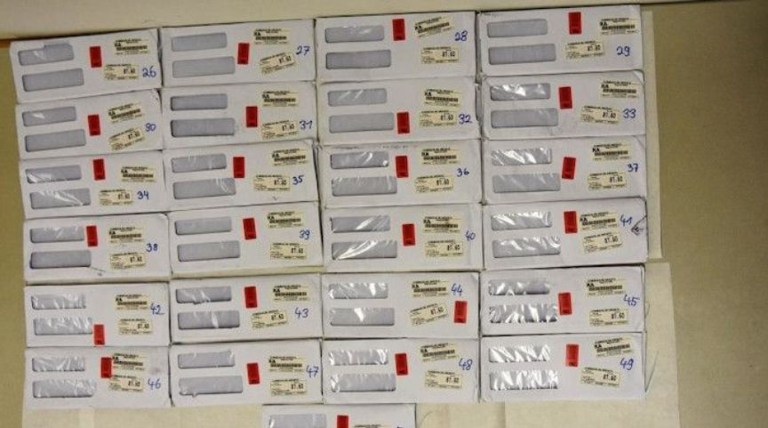
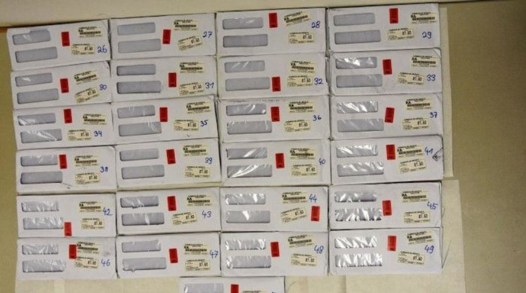

Flugsvamp 3.0 Vendor PharmaZed Sentenced to Prison
The leader of a darkweb drug trafficking ring in Sweden was sentenced to eight years in prison.
At a court in Nyköping, a 47-year-old man who led a darkweb drug trafficking ring was sentenced to eight years in prison. The court sentenced several co-defendants too. One person was sentenced to six years and three months in prison. Two people were sentenced to six years in prison.

The 47-year-old created the vendor profile “PharmaZed” on Flugsvamp 3.0. Prosecutors asked the court to sentence the group leader to 11 years in prison, arguing that people under 18 could have purchased drugs from the vendor.
According to one of the prosecutors, the decrypted ANOM messages played a decisive role in the case. The defendants used handsets from the Federal Bureau of Investigation’s encrypted device company, ANOM. Police arrested 155 suspects in Sweden during the initial Operation Trojan Shield raids in June 2021.
“Since 2019, the US Federal Bureau of Investigation, in close coordination with the Australian Federal Police, strategically developed and covertly operated an encrypted device company, called ANOM, which grew to service more than 12,000 encrypted devices to over 300 criminal syndicates operating in more than 100 countries, including Italian organised crime, outlaw motorcycle gangs, and international drug trafficking organisations.”
“The FBI and the 16 other countries of the international coalition, supported by Europol and in coordination with the US Drug Enforcement Administration, then exploited the intelligence from the 27 million messages obtained and reviewed them over 18 months while ANOM’s criminal users discussed their criminal activities.”
The FBI provided the Swedish Police Authority (Polisen) with access to the decrypted messages sent by unsuspecting users of ANOM, including at least some of the defendants sentenced at the district court in Nyköping.
Of ANOM’s 12,000 users, at least 1,600 “have some connection” to Sweden.
At a court in Nyköping, a 47-year-old man who led a darkweb drug trafficking ring was sentenced to eight years in prison. The court sentenced several co-defendants too. One person was sentenced to six years and three months in prison. Two people were sentenced to six years in prison.

Messages and packages of drugs examined by police during the investigation
The 47-year-old created the vendor profile “PharmaZed” on Flugsvamp 3.0. Prosecutors asked the court to sentence the group leader to 11 years in prison, arguing that people under 18 could have purchased drugs from the vendor.
A picture of a listing for a product sold by “PharmaZed”
According to one of the prosecutors, the decrypted ANOM messages played a decisive role in the case. The defendants used handsets from the Federal Bureau of Investigation’s encrypted device company, ANOM. Police arrested 155 suspects in Sweden during the initial Operation Trojan Shield raids in June 2021.
“Since 2019, the US Federal Bureau of Investigation, in close coordination with the Australian Federal Police, strategically developed and covertly operated an encrypted device company, called ANOM, which grew to service more than 12,000 encrypted devices to over 300 criminal syndicates operating in more than 100 countries, including Italian organised crime, outlaw motorcycle gangs, and international drug trafficking organisations.”
The FBI Operation Trojan Shield announcement
“The FBI and the 16 other countries of the international coalition, supported by Europol and in coordination with the US Drug Enforcement Administration, then exploited the intelligence from the 27 million messages obtained and reviewed them over 18 months while ANOM’s criminal users discussed their criminal activities.”
The FBI provided the Swedish Police Authority (Polisen) with access to the decrypted messages sent by unsuspecting users of ANOM, including at least some of the defendants sentenced at the district court in Nyköping.
Of ANOM’s 12,000 users, at least 1,600 “have some connection” to Sweden.